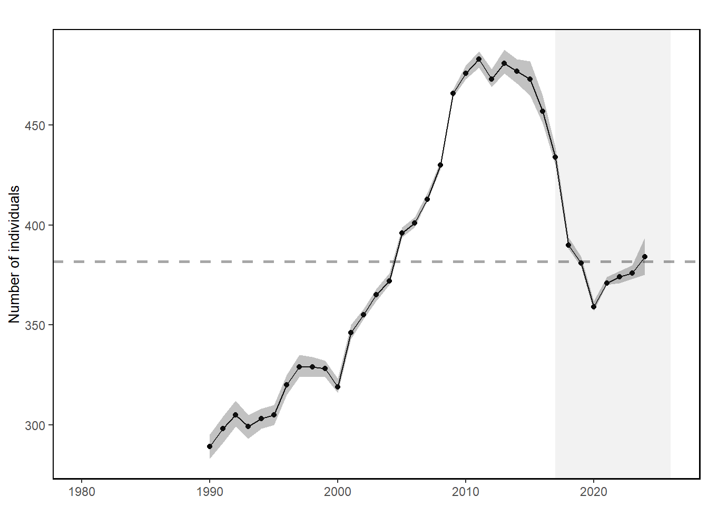

A population
on the edge.
North Atlantic right whale Eubalaena glacialis
Thirty-five years of population estimates trace a rise, a steep decline, and a recent increase. Explore the uncertainty behind the count.
An interactive extension
Every whale counts.
Move through time. Watch an entire population change.
Symbols represent model estimates, not identified whales or their locations. Outlines show a numerical gap from 483, not documented deaths. Lower and upper bounds are the limits of the 95% credible interval; the line chart below always shows medians.
North Atlantic right whale abundance
Annual median estimates, 1990–2024
Recreated from NOAA’s Right Whale Abundance chart. Black points show medians; the gray ribbon shows 95% credible intervals. The dashed line is the full-series mean of annual medians (381.6).
Reading the recovery
483 → 384The 2024 median estimate is 20.5% below the 2011 peak, despite the increase since 2020.
A range, not an exact censusThe 2024 estimate is 384 individuals, with a 95% credible interval of 375–394. These are model-based estimates, not a complete head count.
One species, many pressuresNOAA identifies entanglement in fishing gear and vessel strikes as primary threats. This chart describes population change; it does not isolate its causes.
From reference to reconstruction
The original is a static chart in NOAA’s Northeast US Ecosystem Indicator Catalog. The reproduction preserves its monochrome palette, connected circular marks, gray uncertainty ribbon, dashed horizontal reference, boxed axes, blank early years, and pale recent-period background. The surrounding layout and explorer are additions.
Compare with the original & read the process


What was recreated
A custom SVG chart uses the original plotted CSV, including all 35 non-missing annual medians and their lower and upper 95% bounds. The original plot’s 672 × 480 display ratio, tick placement, line weight, point size, and gray values guided the reconstruction. No chart image or iframe is used to draw the recreated visualization.
What was added
- Every whale counts: an animated population pictogram with a shared year scrubber, timeline playback, milestone jumps, and a lower/median/upper estimate selector. Outlined symbols make the numerical gap from the 2011 median peak visible.
- Year inspection: pointer hover, touch, or the keyboard-accessible slider reveals the estimate, interval, and change from the previous year.
- Time filtering: select a period to examine recent changes, with a fixed vertical scale.
- Layer controls: toggle uncertainty and the full-series average.
The original pale band is retained as a visual feature; it is not presented as a causal effect. Missing population values before 1990 and in 2025 are not converted to zero. The reset button restores the original chart extent and layers.